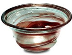

| |
Silver
and lacquer bracelet and ring by Gérard Sandoz. French, Paris,
1926-28
Gérard
Sandoz is one of the three most original artist jewellers working in
France at this time, the other two being Jean Fouquet and Paul Templier.
The decade following the 1925 Paris exhibition was an extraordinary
period for French design in all media, but little is to be found in
UK public collections.
This bracelet is
an outstanding example of lacquer work by Sandoz, both for its powerful
abstract design and its superb execution. Lacquer is a natural resin
applied in layers, each of which is allowed to dry before the next is
applied. Most of Sandoz' work was made to commission and so pieces such
as this are extremely rare.
Civil
War finger-ring from Leconfield, East Yorkshire
The execution of Charles
I gave rise to huge numbers of rings inscribed inside with the fateful
date in 1649. Others bore his portrait on the front and could have been
made either during his lifetime or after the Restoration when it was safe
to wear Stuart rings openly. This ring is inscribed OBBAY THY KING, showing
that it was made without doubt for a Royalist during the nine years of
Civil War between 1640 and Charles' execution. Because the inscription
is hidden inside, the ring could be worn at all times without fear of
detection and provides a poignant addition to the Civil War material on
display in Room 46 (Purchased by The British
Museum Friends).
Silver-gilt
hat badge with an engraved ‘I' below a crown, from Raydon, Suffolk,
16th century (2001,7-1,1)
Eight lead-alloy
pilgrim souvenirs relating to the cult of St Thomas Becket at Canterbury
(2001,7-2,1-8)
1. Head of Becket (early 14th century
2. Becket riding a peacock (1350-1400)
3. Châsse-like ampulla (late 13th - mid-14th century)
4. Canterbury bell (14th century)
5. Standing figure of Becket (1350-1400)
6. Ship-shaped ampulla (13th century)
7. Sword in sheath (mid-15th century )
8. Costrell-shaped ampulla (1400-1450)
Silver-gilt dress-hook
or cap-hook in the form of a spoked wheel from Nettlestead, Norfolk,
16th century (Purchased with a contribution by the British Museum Friends)
Porcelain dish made
at the Gardner factory, Moscow, mid-19th century (2001, 7-4,1)
Gilt-bronze harness
mount, found at Shilvinghampton, Dorset. Irish, 8th century (2001, 7-5,1)
Blue cut glass jug,
English, probably cut in London, perhaps in the workshop of Thomas Betts
(2001, 7-6,1)
Enamel plaque, painted
and gilded with the arms of William IV, Prince of Orange and Nassau-Dietz
(1711-51) enclosed by the Order of the Garter. Meissen, Germany, c.1734
(2001, 7-7,1; Purchased with a contribution from the British Museum
Friends)
Earthenware vase
designed by Eva Zeisel for Scramberg Majolika Manufaktur, 1928-30 (2001,7-8,1)
Lacquered silver
bracelet and matching ring by G. Sandoz, Paris, 1926-28 (2001,7-9,1-2)
Silver cup made
by Nathan & Hayes, 1908-9, imitating a Mycenaean cup found by Schliemann
(2001, 7-10,1)
Copper-alloy amulet
or cult item in the form of a naked female figure found near Rochester,
Kent (2001, 7-11,1)
An Anglo-Saxon nummular
brooch found on the Thames foreshore (2001, 9-1,1)
Silver-gilt amuletic
pendant in the form of a partly clothed male figure, found near Carlton
Colville, Suffolk. Anglo-Saxon, 7th century (2001, 9-2,1)
Gold brooch in the
form of a six-petalled rose with an open, circular centre and the inscription
'En Bone Temps', found near Hackleton, Northamptonshire, 15th century
(2001, 9-3,1)
|
|

Palm
cup Merovingian, 7th century AD, from Reims, Marne, France
|
|
|
|